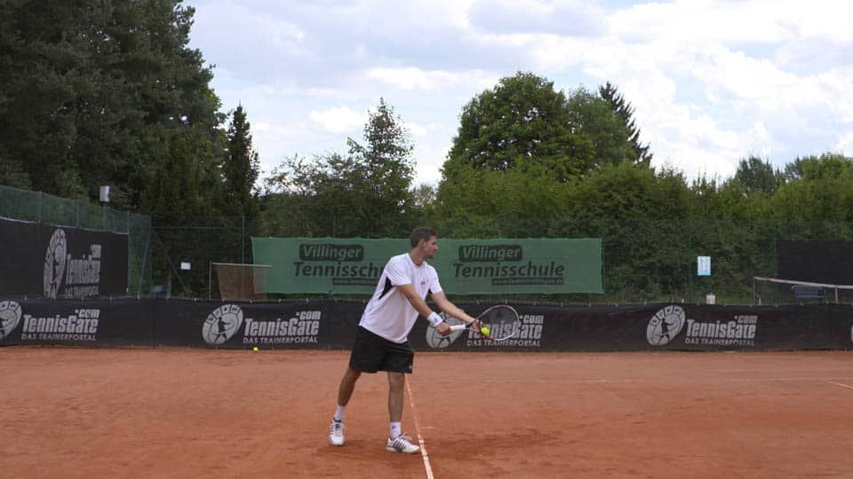

שלבים להגשה
העמדה נכונה
- עמוד לצד הרשת ממש מאחורי קו הבסיס
- כף הרגל הקדמית שלך צריכה להצביע לכיוון עמוד הרשת
- כף הרגל האחורית שלך צריכה להקביל לקו הבסיס
- המחבט שלך נמצא בגובה הירכיים מול הגוף ומצביע לכיוון המטרה שלך
האחיזה הנכונה עבור הגשה

אחוז את המחבט כמו פטיש והחזק את המחבט
לקיחת המחבט לאחור
מעמדת ההתחלה, תפיל את שתי הידיים, תפריד אותן כשהן מגיעות לירך הפנימית של הרגל הקדמית שלך ותעיף את הכדור תוך כדי העלאת המחבט שלך לעמדת זריקה.
הרמת הכדור

- זרוק את הכדור עם זרוע ישרה
- שחרר את הכדור בגובה העיניים שלך והמשיכו להרים את הזרוע למעלה בעקבות הכדור.
תנופה

הושיט יד כדי להכות בכדור - ככל שתיצור מגע גבוה יותר כך תוכל לייצר יותר כוח וכפף ברכיים
תנופה

זרוע ההגשה כפופה בזווית של כ-90 מעלות. . הכתפיים מסובבות והברכיים כפופות .ודחוף מעט את הירכיים שלך ותעביר את המשקל לכף הרגל הקדמית, ועקל את הגב התחתון.